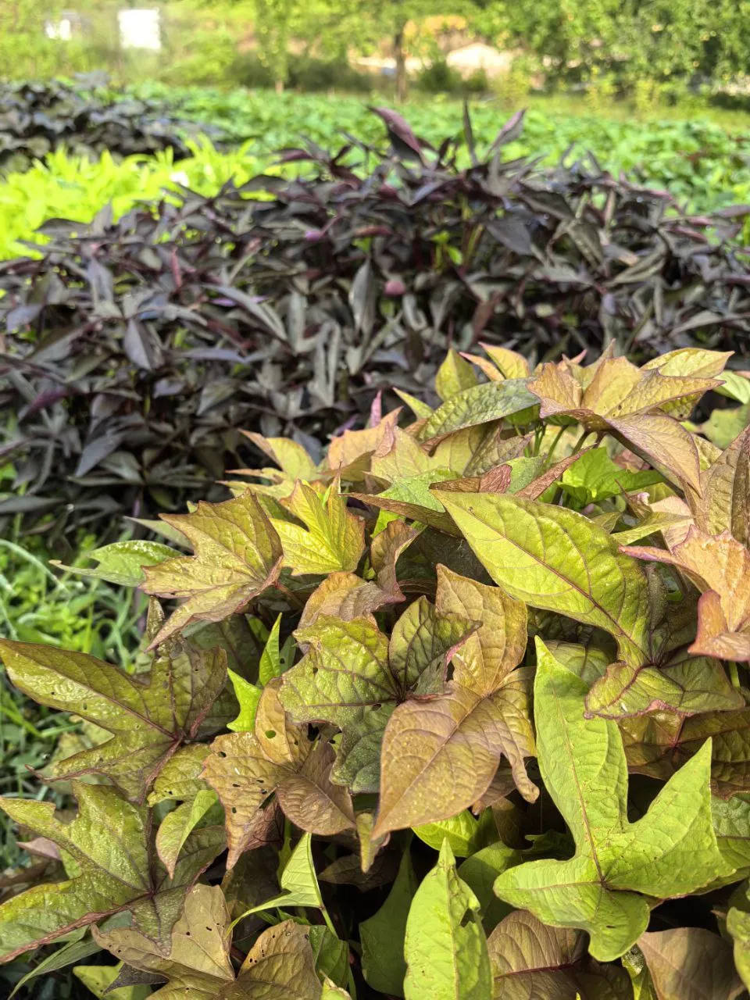
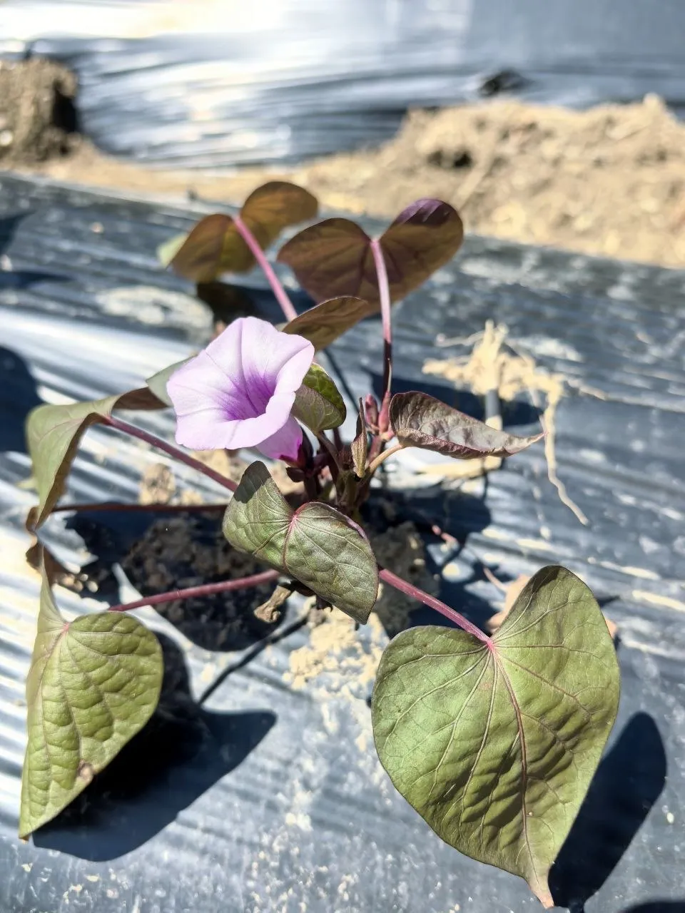
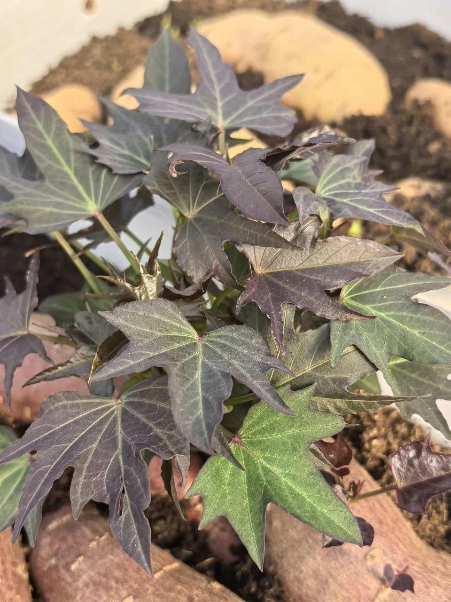

Селекция, профессиональные адаптированные сорта батата для России и мир экзотических растений. От сверхсладких авторских до декоративных — с фильтрами по вкусу, сроку и неприхотливости.



Отобранные сорта с высокой сладостью, ранним сроком и проверенной урожайностью. Все адаптированы для российского климата.
Экзотические культуры, адаптированные для России: ямс, чайот, кивано, чуфа и другие. Результат многолетней интродукции.
Реальные отклики, урожаи и впечатления садоводов, которые уже выращивают наши сорта и растения.


Батат — это самостоятельный, уникальный овощ, который вносит разнообразие и пользу в ваш рацион.
Батат не требователен к почве — культура бедных земель. Любит солнечные места и калийно-фосфорные удобрения.
Жизнестойкая культура успешно растет от Краснодарского края до Сибири, Урала и Дальнего Востока.
Батат — не просто «сладкий картофель». Это самостоятельный продукт с уникальным вкусом и пользой.
Ажурные плети до 5 метров. Листья разных форм и цветов — от зеленого до темно-сиреневого.


В 2025 году мы достигли значимого успеха: наши сорта батата, разработанные селекционерами Виталием и Натальей Луцан, были официально включены в Государственный реестр селекционных достижений России.
Помимо батата, мы занимаемся интродукцией редких, полезных и декоративных культур, адаптируя их к российскому климату.
Подробнее о ГосреестреЧасть селекционной работы уже защищена патентами. Это отдельное подтверждение уникальности и многолетней работы с сортами.


Ознакомьтесь с актуальным прайс-листом на клубни батата и экзотических растений. По вопросам наличия и отправки свяжитесь с нами удобным способом.